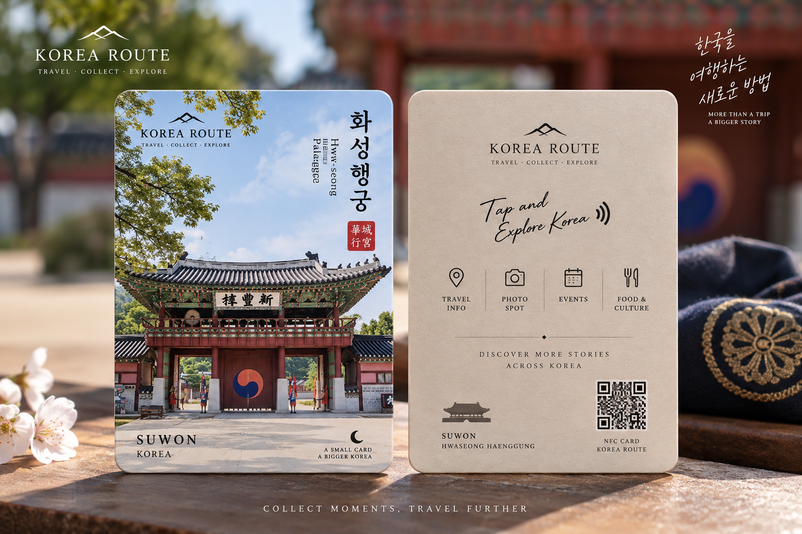
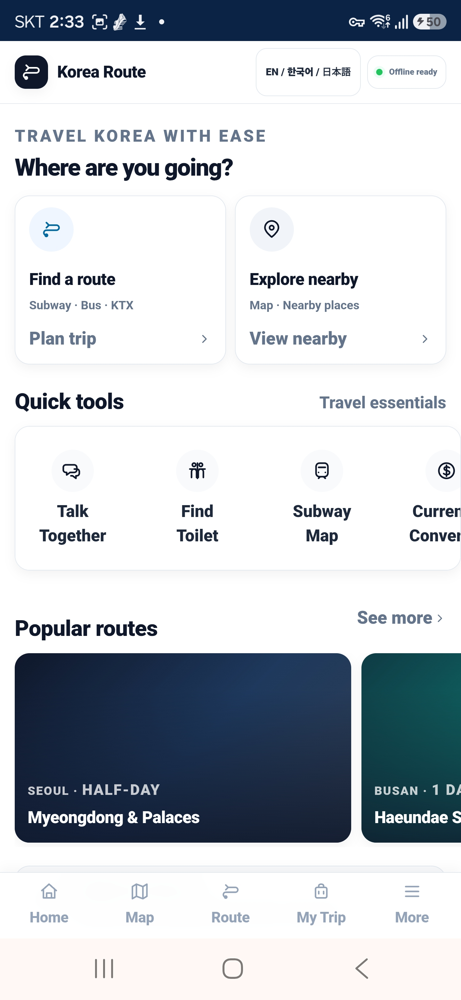

한국 여행을
게임처럼 수집하다
한국 관광지를 직접 방문해 NFC 굿즈를 수집하고, 태그하면 여행 안내·AI 여행비서·지역 미션·여행 기록을 이용하는 새로운 수집형 관광 서비스입니다.

여행자가 직접 움직이고,
하나씩 수집합니다.
단순히 관광 정보를 검색하는 것이 아니라 실제 관광지를 방문하는 과정 자체를 재미있는 여행 경험으로 만듭니다.
수원·경주·부산 등 실제 지역 방문
지역별 관광 굿즈를 하나씩 수집
앱 설치 없이 웹으로 바로 연결
AI 여행비서·사진 명당·추천 동선
지역 미션과 여행 도감 완성
여행이 끝난 후에도 기록을 다시 확인
관광정보를 보는 것을 넘어
여행 경험을 연결합니다.
현장에서 바로 보는 사진 명당
여러 블로그와 SNS를 검색하지 않아도 현재 관광지에서 사진이 잘 나오는 위치와 추천 구도를 쉽게 확인할 수 있습니다.
여행 동선과 지역 정보
현재 위치를 기준으로 다음 관광지와 추천 이동 코스를 빠르게 확인할 수 있도록 돕습니다.
AI 여행비서
여행 중 궁금한 점을 쉽게 묻고, 현재 지역과 여행 상황에 맞는 도움을 받을 수 있습니다.
여행을 게임처럼 수집
방문한 지역과 수집한 굿즈가 여행 도감에 쌓이고, 다음 지역에 도전하고 싶은 이유를 만듭니다.
한국을 떠난 뒤에도
여행은 끝나지 않습니다.
외국인 관광객이 본국으로 돌아간 뒤 NFC 굿즈를 다시 태그하면 방문했던 장소, 여행 사진, 완료한 미션, 한 줄 기록 등 당시의 여행 추억을 다시 볼 수 있도록 합니다.
수원에서 시작해
한국 전체로 확장합니다.
첫 시험 지역은 수원입니다. 실제 관광객의 반응과 판매 결과를 확인한 뒤 다른 주요 관광지역으로 단계적으로 확대할 계획입니다.
KOREA ROUTE는
실제로 개발 중입니다.
외국인 관광객이 한국에서 이동하고 관광지를 찾고, 필요한 여행 정보를 쉽게 확인할 수 있도록 모바일 웹서비스 KOREA ROUTE를 개발하고 있습니다.

KOREA ROUTE는 현재 개발 중입니다.
외국인 여행자를 위한 KOREA ROUTE 웹서비스를 개발하고 있으며, NFC 관광 굿즈와 연결해 실제 여행 현장에서 사용할 수 있는 서비스로 발전시키고 있습니다.